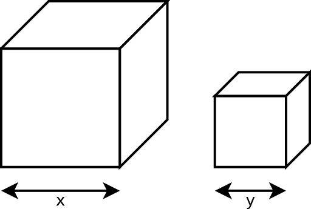
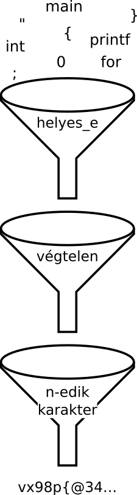
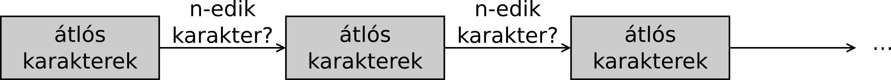

Mi tud a számítógép? Mi az, amire képtelen?
Czirkos Zoltán · 2015.02.18 · Frissítve: 2015.02.15
Mi az a feladat, ami nem oldható meg programból? Egy írás Alan Turing cikke nyomán.
Vannak matematikai feladványok, amelyeknek a megoldása így kezdődik: „vegyük észre, hogy.” Ezek legtöbbször jóval nehezebbek azoknál, mint amelyek megoldására általános eljárás, algoritmus adható: amely algoritmusnak a lépéseit bambán végrehajtva jutunk el a megoldáshoz, nem kell közben semmilyen ötlet.
1936-ban – jóval azelőtt, hogy az első igazi számítógépeket megépítették volna – egy angol matematikus, Alan Turing a képzeletbeli számítógépéről írt cikkében (On Computable Numbers, with an Application to the Entscheidungsproblem). Bebizonyította, hogy minden probléma, amely mechanikus lépésekkel megoldható, az megoldható az ő képzeletbeli, amúgy meglepően egyszerű felépítésű gépével is. Megmutatta azt is, hogy vannak olyan problémák is, amelyek nem oldhatóak meg algoritmikusan. Ez nem változott azóta. A mai számítógépek lelkük mélyén Turing-gépek, képességeiket tekintve egyenértékűek a cikkben bemutatott primitív géppel. Legfeljebb annyi a különbség, hogy gyorsabbak és könnyebb őket programozni.
Ez az írás az említett cikk keletkezésének előzményeiről, és ezen keresztül a programozásról mesél. A diofantoszi egyenletektől indulva eljutunk oda, hogy kitalálunk egy feladatot, amely bár teljesen korrektül van specifikálva, kiderül róla, hogy nem oldható meg programmal.
Az írást Charles Petzold: The Annotated Turing című könyve inspirálta, és az első részben szereplő példák, továbbá a nyomozós hasonlat is onnan származnak. Az algoritmusokkal kapcsolatos gondolatmenet a könyvet és természetesen Turing cikkét követi, csak C nyelvű programokra adaptáltam azt.
1Das Entscheidungsproblem
Diofantosz, az ókori görög matematikus az általa kitalált feladatokról lett híres. Ezeknek a feladatoknak az érdekessége az, hogy bár sokszor megoldásuk közben kevesebb egyenletünk van, mint amennyi látszólag szükséges, mégis mindig megoldhatóak valamilyen trükkel. Főleg mert a megoldásokat az egész számok körében keressük. Egyik feladata így hangzik:
„Osszunk egy számot két köb-részre úgy, hogy a kapott köbök oldalhosszainak összege egy adott szám legyen. Legyen a felosztandó szám 370, és az oldalhosszak összege 10.”
A hatványozást akkoriban még nem ismerték külön műveletként. A köb-rész alatt Diofantosz
olyan számot ért, amely egy egész szám harmadik hatványa, vagyis egy egész
oldalhosszúságú kocka térfogata. Tehát tudjuk, hogy az oldalhosszak összege
x+y=10, a térfogatoké meg x3+y3=370.
Ezek az egyenletek viszonylag egyszerűnek tűnnek, Diofantosz azonban
mindig csak egy változót használt. Úgy már sokkal nehezebb megoldani a feladatot.
Hogy ezt a hiányosságot pótolni tudja valami mással, minden
feladatnál előállt egy egyedi ötlettel. Itt azzal, hogy a kockák oldalhosszait
5+x-szel és 5-x-szel kell jelölni, mert akkor felírható az
(5+x)3+(5-x)3=370 egyenlet. Ebből szerencsére a köbök kiesnek,
és x2=4-hez jutunk, amiből kijön az is, hogy a kockák oldalai
7 és 3 egység hosszúak.
Egy másik, amúgy talán a legismertebb feladata így hangzik: „osszunk egy négyzetet két másik
négyzetre.” Vagyis hogy keressük meg az x2+y2=z2
egyenlet megoldásait az egész számok körében. Ennek is van geometriai értelme: Pitagorasz tétele
miatt ezek azok a derékszögű háromszögek, amelyeknek mindhárom oldala egész szám hosszúságú. Itt
végtelen sok megoldás lehet, mert ha a (3;4;5) számhármas megoldás, akkor a (6;8;10) is.
Ugyanaz a háromszög duplájára nagyítva. Egyébként végtelen számú, egészen más
oldalarányú megoldások is vannak.
A sokféle probléma megoldására Diofantosz mind egyedi módszert adott. Felmerült a matematikusokban a kérdés, hogy vajon létezik-e általános módszer ezeknek az egyenleteknek megoldására. Ez annyira fontosnak tűnt, hogy egy német matematikus, David Hilbert az 1900-as évek elején felvette ezt a problémát a matematika tíz legfontosabb, megoldatlan feladatát tartalmazó listára. Az eredeti, német szöveg eleje így hangzott: „Entscheidung der Lösbarkeit einer diophantischen Gleichung.” Emiatt szinte mindenki Entscheidungsproblem néven említi ezt azóta is. A szöveg magyarul:
Egy diofantoszi egyenlet megoldhatóságának eldöntése. Adott egy diofantoszi egyenlet, tetszőlegesen sok ismeretlennel és racionális együtthatókkal. Adjunk meg egy eljárást, amellyel eldönthető véges számú lépésben az, hogy az egyenlet megoldható-e a racionális számok körében.
Mondhatjuk, hogy ezzel nem kért olyan sokat: nem olyan módszert akart Hilbert, amellyel a
megoldások meghatározhatóak. Csupán egy olyat, amivel eldönthető, hogy egyáltalán létezik-e
megoldás vagy nem. Viszont a kérés nem is kevés: a kidolgozott módszernek általánosnak kell
lennie, és véges számú lépésben, mechanikusan végrehajthatónak kell lennie. Ma már úgy fogalmaznánk
ezt meg, hogy Hilbert egy algoritmust várt. Tehát a kérdés ez: létezik-e olyan
program, amely bármelyik diofantoszi egyenletet ki tudja elemezni megoldhatóság szempontjából.
scanf(egyenletek együtthatói),
printf(van-e megoldás).
Azóta már tudjuk, hogy nem létezik. A kérdést csak 1700 évvel Diofantosz művének megjelenése után sikerült megoldania Alan Turingnek és Alonzo Churchnek. Eltérő gondolatmenettel, de mindketten bebizonyították azt, hogy nem létezhet ilyen program, és hogy még van egy csomó másik megoldhatatlan feladat is. A programozás szempontjából Turing megoldási módszere igen nagy jelentőségű, mert képzeletbeli számítógépének leírásával megalapozta a programozást, a programozói gondolkodást is. Furcsának is tűnik visszatekintve, hogy ez gondolatmenetének csak egy mellékterméke volt.
2Az egész vagy a tört számok vannak többen?
A bevezetőben említett lehetetlen feladat specifikálása előtt még elmélkedjünk kicsit a számok természetén!
Tudjuk azt, hogy a számok végtelen sokan vannak. Matematikailag a végtelen nehezen kezelhető fogalom. Nemcsak azért, mert a végtelen egy tulajdonság, nem pedig egy szám; hanem azért is, mert nem csak egyféle végtelen létezik. A pozitív egész számokra például azt szoktuk mondani, hogy megszámlálhatóan végtelen sokan vannak. Azért végtelen sokan, mert bármelyiknél tudunk mondani egy eggyel nagyobbat, és azért megszámlálhatóan, mert tudunk írni egy olyan (képzeletbeli) listát, amelyen az összes pozitív egész szám szerepel.
Ennek a listának az elemeit sorba tudjuk állítani és be tudjuk számozni. Minden elem annyiadik sorszámot kapja, mint az értéke. Bár úgy tűnik, hogy ehhez hozzávéve a nullát és a negatív számokat, egy sokkal hosszabb listát kell kapjunk, ez nincs így. Ha indulunk a nullától, és utána felváltva veszünk egy-egy pozitív és negatív számot, akkor a hiánytalan lista ebben az esetben is felírható. Mivel ezek alapján egy oda-vissza megfeleltetést tudunk adni egy pozitív egész szám és egy hozzá tartozó (nem feltétlenül pozitív) egész szám között, kénytelenek vagyunk kijelenteni: a pozitív és negatív számok együtt „nincsenek többen”, mint a csak pozitív számok. Ugyanannyian vannak.
| sorszám | elem |
|---|---|
| 1. | 1 |
| 2. | 2 |
| 3. | 3 |
| 4. | 4 |
| 5. | 5 |
| … | … |
| sorszám | elem |
|---|---|
| 1. | 0 |
| 2. | 1 |
| 3. | −1 |
| 4. | 2 |
| 5. | −2 |
| … | … |
Elsőre azt hihetnénk, hogy racionális törtből sokkal többnek kell lennie, mégpedig azért, mert bármely két szomszédos egész szám között végtelen sok törtet találunk. 0 és 1 között például ott van az 1/2, 1/3, 1/4 stb. Ha minden egymás melletti számpár közé végtelen sok tört kerül, akkor végtelenszer végtelen számú törtnek kell lennie. De ez sincs így! A racionális törtek is megszámlálhatóan végtelen sokan vannak. Ha felírjuk őket egy táblázatban, amelyben az oszlopok a számlálót, a sorok a nevezőt határozzák meg, és utána átlósan, oda-vissza megyünk végig ezen, akkor meg tudjuk számozni az elemeket, és semelyik nem marad ki.
Na jó. Akkor a valós számok aztán már tényleg többen vannak, mert azok nem diszkrét helyeken vannak a számegyenesen, hanem folytonosan! Bár mintha ez igaz lehetne a racionális számokra is, mert a számegyenes egy pontját tetszőleges pontossággal meg tudjuk közelíteni racionális törttel is. (De nem mindegyiket.) Bizonyítsuk hát be a valósakról is, hogy megszámlálhatóak!
Fog menni? Nem. Ebbe most beletörik a bicskánk. Ez végülis jó hír, mert legalább kiderül, hogy ez esetben helyes az intuíciónk. Meg lehet mutatni ugyanis, hogy nem lehet listát csinálni a valós számokból. Ez egy indirekt bizonyítás lesz (reductio ad absurdum). Az ilyennek a lényege az, hogy feltételezünk valamit, amit aztán tényként kezelünk. Kiindulunk belőle egy levezetéssel, amely közben egyszer csak egy ellentmondáshoz jutunk. Olyan ez, mint amikor egy nyomozó a gyanúsítottjától alibit kér. Megkérdezi, hogy hol volt a bűntény idején. Ha bizonyítani tudja, hogy máshol, akkor ez ellentmondásban lesz azzal a feltételezéssel, hogy ő követte el a bűntényt.
Kövessük Georg Cantor, a német matematikus gondolatmenetét! Mit akarunk bebizonyítani? Hogy nem lehet a valós számokból listát csinálni. Akkor tételezzük fel ennek az ellenkezőjét: azt, hogy mégis csak lehet. A feltételezett listán szerepelnek az egész, a racionális és az irracionális számok is. Rajta van a 2, rajta van az 1/7 és a √2 is, meg a π is. Írjuk le ezeket tizedes törtként is a táblázatunk harmadik oszlopában!
| sorszám | név | tizedes |
|---|---|---|
| 1 (a) | 2 egész | 2,00000000000000000000… |
| 2 (b) | 1/7 | 0,14285714285714285714… |
| 3 (c) | √2 | 1,41421356237309504880… |
| 4 (d) | π | 3,14159265358979323844… |
| 5 (e) | egyre több egyes | 0,10110111011110111110… |
| … | … | … |
Ezek után pedig tekintsük azt a 0 és 1 közötti számot, amelyet a következőképpen kapunk. A
tizedesjegyeinek első számjegyének azt a számjegyet választjuk, ami a listán szereplő első szám
tizedesvessző utáni első tizedesjegye (a1), de megnöveljük azt eggyel.
Ha ott 9 volt, akkor pedig 0-t veszünk helyette. A századok helyére a második szám második
jegyét (b2 plusz egy). A harmadik helyre a harmadik számjegyét,
c3-at növelve eggyel, és így tovább. Átlósan haladva a fenti táblázatban, és
minden jegyet növelve, ezt kapjuk: 0,15561…, és folyatódik valahogyan.
Namármost, a helyzet a kapott a számmal az, hogy nincs rajta a listánkon. Pedig azt mondtuk, azon minden valós szám rajta van! Hogyhogy nincs rajta? Úgy, hogy ez nem lehet ugyanaz, mint a lista első száma: attól eltér a tizedesvessző utáni első számjegyben. Nem lehet a második sem, mert attól meg biztosan eltér a másodikban. Nem lehet a harmadik sem, és semelyik sem, mert az n-edik elemtől mindig eltér az n-edik számjegyben. A nagy műgonddal összeállított listánk hiányos! A valós számok ellenállnak a felsorolási kísérletünknek: megszámlálhatatlanul végtelen sokan vannak.
3Hány C program van?
Programozzunk! A számokat megvizsgálva felmerülhet a kérdés, hogy vajon mi a helyzet a C programokkal, azok hányan vannak. Azt tudjuk, hogy végtelen sokan kell lenniük, mert ha egy forráskódba beírunk egy kommentet, akkor az egyből egy másik forráskód lesz. Már egyetlen feladatra végtelen sok megoldás van, hát még többre. Az igazi kérdés az, hogy vajon megszámlálhatóan vagy megszámlálhatatlanul végtelen sokan vannak.
A választ erre nagyon könnyű megadni. A C forráskódok fix, véges méretű jelkészletből álló szövegek: lehetnek bennük kisbetűk, nagybetűk, számok, néhány írásjel (operátorok, pontosvessző stb.) és szóköz jellegű karakterek (szóköz, tabulátor, újsor). Ha ezeket a jeleket, karaktereket megszámozzuk, ahogyan a számítógépen amúgy is meg szoktuk számozni, akkor az ezekből álló szövegeket növekvő sorba állíthatjuk. A rövidebbektől indulunk a hosszabbak felé; ha egyforma hosszúak, akkor pedig amelyik előrébb van az „ábécében”, az kerül előre. Ahogyan az egész számoknál is.
A szövegek valahogy így néznek ki: a, b, c, … 0, 1, … {, }, … aa, ab, ac … a{, a} … és így tovább. Ezekből aztán ki tudjuk választani a helyes C programokat. Például úgy, hogy lefordítjuk őket. Ha a fordító nem jelez szintaktikai hibát, akkor az egy szintaktikailag helyes program. Ezeket tesszük a listára. Az első ilyen, amit meg fogunk így találni, az a bal oldalon látható. Egy nagyon rövid program, amelyik már ki is ír valamit, a jobb oldalon.
main(){}
#include <stdio.h>
int main(void) {
printf("0");
return 0;
}
A fenti programok véges ideig futnak, azaz megállnak valamikor. Elképzelhető olyan is, amelyik sosem áll le, és olyan is, amelyiknek a kimenete végtelen hosszú. A végtelen ideig futó programokat nem szoktuk szeretni, de ha az a feladatunk, hogy írjuk ki az 1/7 tört tizedesjegyeit, akkor ilyet kell írnunk. Ugyanilyen végtelen hosszú kimenetű program lehetne az, ami az első gyakorlat utolsó feladatában is szerepelt, és a √2 tizedesjegyeit számolja ki.
#include <stdio.h>
int main(void) {
for (;;) { /* forever */
}
return 0;
}
#include <stdio.h>
int main(void) {
printf("0.");
for (;;)
printf("142857");
return 0;
}
A lényeg tehát: látjuk azt, hogy a C programok egy listában felsorolhatók. Létezik első, második, harmadik, akárhányadik (szintaktikailag helyes) C program. Ez azt jelenti, hogy ezek is megszámlálhatóan végtelen sokan vannak.
4A lehetetlen feladat
A programok megírása előtt mindig specifikáljuk azt, hogy a programnak mit kell csinálnia. Ez egyszerűen annyit jelent, hogy megadjuk, mi kell legyen a program kimenete. Lássunk most egy furcsa, de mégis teljesen korrekt specifikációt.
Írjunk egy olyan programot, amely végtelen sok karaktert ír ki a kimenetére, mégpedig a következőképpen. Az első karakter legyen az előbb említett lista első programja kimenetének első karaktere. A második pedig a második programé, a harmadik a harmadiké és így tovább. Vagyis használjuk ugyanazt az átlós módszert, amit a valós számoknál Cantor: legyen az új programunk kimenetének n-edik karaktere a lista n-edik programja kimenetének n-edik karaktere. Hogy ez működjön, ahhoz persze az is kell, hogy a listában csak olyan programok szerepeljenek, amiknek mindig legalább a várt számú karakterből áll a kimenete. Dobjuk el ezért a listából a véges ideig futó, vagy véges hosszú kimenetet generáló programokat, és foglalkozzunk csak azokkal, amelyek végtelen hosszú kimenetet generálnak.
Az eljárás tehát a következő. Generáljuk sorban az egyre hosszabb szövegeket. Kiválasztjuk ezek közül a szintaktikailag helyes C programokat. A szintaktikailag helyesek közül kiválasztjuk azokat, amelyek végtelen ideig futnak, és végtelen hosszú kimenetet generálnak. Nekünk most csak ezek kellenek. Minden ilyen programot lefuttatunk, amíg meg nem adja az n-edik karaktert, utána pedig lelőjük. A kimenetéből kivesszük csak ezt az n-edik karaktert (a legutolsót, amit kíirt, mert pont utána megállítottuk). Legyen ennek a programnak a neve „átlós karakterek”! A működése az alábbi pszeudokóddal adható meg.
PROGRAM: átlós karakterek
kód := " "
n := 0
CIKLUS örökké
kód := következő_szöveg(kód)
CIKLUS AMÍG nem helyes_e(kód) VAGY nem végtelen(kód)
kód := következő_szöveg(kód)
CIKLUS VÉGE
n := n+1
c := kontrollált_futtatás(kód, n)
KIÍR: c
CIKLUS VÉGE
PROGRAM VÉGE

Az egyre hosszabb szövegek generálása egyszerű feladat, mintha csak az egyre nagyobb számokat
kellene felsorolni. A szövegek ellenőrzését rábízzuk egy C fordítóra. Ilyet már láttunk, tudjuk,
hogy ez megoldható. Ha a fordítóprogram le tudja fordítani, akkor az a program szintaktikailag
helyes. A kontrollált futtatás is könnyedén megoldható, ha a szabványos printf()-et
kicsit megbuheráljuk: a mi változatunk a kiírás mellett számolja azt is, hogy hány karaktert írt
már ki, és ha megvan az n-edik, akkor megszakítja a program futását.
Tulajdonképp három szűrést teszünk egymás után. A középső szűrőről, arról az alprogramról, amely ellenőrzi egy C programnál, hogy végtelen hosszú kimenetet generál-e, nem tudunk semmit. Tételezzük fel ezért, hogy van egy olyan algoritmus, amely képes ilyesmire: megkapja egy C program forráskódját, és kielemezve azt megmondja, hogy a program, nevezzük így: megfelelő-e. Sajnos ez nem megy csak úgy, hogy lefuttatjuk a programot, és majd meglátjuk közben. Ugyanis ha egy program már kiírt egymillió karaktert, az még nem jelenti azt, hogy nem fog befejeződni vagy elnémulni később. Szóval itt valami bonyolultabb eljárásról van szó. Mindenesetre tegyük fel, hogy van egy ilyen.
Nézzük meg, hogy a fenti, pszeudokóddal adott „átlós karakterek” program eleget tesz-e a megfelelőségi feltételnek. Az előállított C programszövegek szintaktikai ellenőrzése lefut véges időn belül, ezért az nem fogja megakasztani a működést. Kiszűrjük benne azokat a programokat, amelyek végtelen hosszú kimenetet generálnak. Erre szolgál a feltételezett algoritmus, amelyről azt is feltételezzük, hogy véges időn belül képes elemezni a programokat. Ez kiszűri azokat a programokat, amelyek beragadnának, vagyis amelyeknél hiába várnánk a valahányadik karakterre. A szűrés után megmaradó programok futtatása is véges ideig tart, hiszen bár végtelen sok karaktert írnak ki, egy adott számú kiírás után megállítjuk őket. Kijelenthetjük ezért, hogy a fenti pszeudokód is egy megfelelő program, mert egyre hosszabb C forráskódokból végtelen sok van, és mindig lesz egy újabb, amit elindíthat.
A probléma csak az, hogy logikusan ki tudjuk következtetni azt is, hogy nem megfelelő. Miért? Azért, mert ha ez is egy C program, akkor valahol ennek is kell szerepelnie az összes C program listájában. (Ha nem C-ben íródott, akkor pedig van egy vele ekvivalens, ugyanilyen működésű, C nyelvű változat.) Sokára ugyan, de előbb-utóbb meg fogja találni a saját forráskódját. Legyen ennek a sorszáma N. Ez helyes szintaktikailag, továbbá a „végtelen” nevű algoritmusunk azt fogja mondani rá, hogy a program megfelelő (az előző bekezdésben következtettük ki, hogy az, tehát ez kell legyen a válasz). A program lefordítódik, és elindul. Teker, teker, teker, megkeresi az első helyes és megfelelő programszöveget, lefuttatja azt a programot, és kitalálja az első karaktert. Aztán kitalálja a másodikat, a harmadikat stb. De addig kell futnia, amíg meg nem mondja az N-ediket. Szóval végül eljut az N-edik sorszámú programhoz, ami megint saját maga. Ezért ő is csinál egy új példányt magából, amelyik immár a harmadik iker, és amelyik kezdi elölről az egészet.
Itt aztán beragad a folyamat, és soha nem fog tudni túljutni ezen a karakteren. Az első program nem kapja meg az N-edik karaktert, mert arra vár, hogy a második előállítsa azt. A második nem kapja meg, mert a harmadikra vár, és így tovább. Mindegyik ugyanazért képtelen eljutni az N-edikig, amiért már a legelső is képtelen volt rá. Kiderül, hogy a programunk nem megfelelő: nem képes végtelen hosszú kimenetet generálni.
Felmerülhet ötletként, hogy az N-edik programot egyszerűen hagyjuk ki a listáról. Vagy hogy úgy írjuk meg a programot, hogy a saját maga kódját ismerje fel és hagyja ki. De láttuk, a legegyszerűbb feladat is végtelen sokféleképpen megoldható. A program ki kellene hagyja a saját maga kódján kívül az összes többi olyan változatot is, ami saját magával ekvivalens.
Tehát van egy programunk, amiről be tudjuk bizonyítani, hogy végtelen hosszú kimenetet gyárt (megfelelő). Be tudjuk azt is róla bizonyítani, hogy mégsem, mert egy bizonyos számú karakter után elakad (nem megfelelő). Ezek egymásnak ellentmondanak! Hol a hiba?! Ott, hogy feltételeztük egy olyan algoritmusnak a létezését, amelyik egy forráskód elemzésével, annak lefuttatása nélkül meg tudja mondani, hogy végtelen kimenetet generál-e, vagy nem. Ha ilyet feltételezünk, ellentmondásra jutunk. Ilyen algoritmus egyszerűen nem létezhet. Képtelenség megírni ezt a programot.
Ugyanígy lehetetlen azt is megmondani általában, hogy ki fog-e egy program valaha írni egy bizonyos betűt, vagy nem. Azt is lehetetlen megmondani egy programkódról általánosságban, hogy le fog-e állni valaha az általa vezérelt folyamat, vagy nem. Hasonló okok miatt lehetlen általános módszert adni a diofantoszi egyenletek megoldására is. (Ennek bizonyításával végződik Turing cikke.) Olyan programot sem lehet írni, amely kitalál egy adott specifikációt megvalósító algoritmust. A programok soha nem fogják tudni helyettesíteni a programozókat, sőt arra is örökké képtelenek lesznek, hogy megtalálják azokat a hibákat, amelyeket elkövetnek algoritmizálás közben. Miért? Mert olyan algoritmust sem lehet csinálni, amely egy tetszőleges programról megmondja, helyes-e szemantikailag, vagy nem.
Fellélegezhetünk: a programozóknak a világ végezetéig lesz munkája!